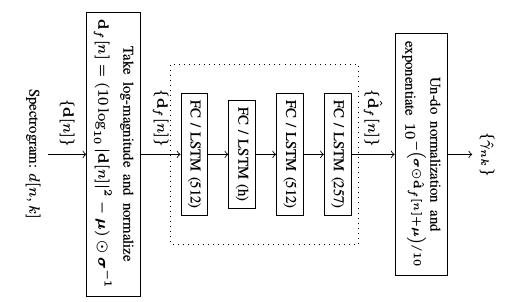

LSTM based AE-DNN constraint for better late reverb suppression in multi-channel LP formulation
Srikanth Raj Chetupalli, and Thippur V. Sreenivas
The Problem
''Late reverberation suppression"
Multi channel linear prediction for suppression of late reverberation component in a reverberant signal is
considered in this paper. Late reverberation is modeled using linear prediction with a delay in short time Fourier
transform (STFT) domain, and the early reflection part is obtained as the prediction residual signal (desired signal).
Time-varying Gaussian source model is considered for the desired signal, which leads to a Weighted Prediction Error
(WPE) minimization problem. The weights depend on the instantaneous power spectral density (PSD) estimates for the
desired signal. Prediction filters and the weights are estimated iteratively in an alternative manner. Reverberant
signal is used to initialize the iterations, which has poor convergence properties. To solve this, we investigate a
deep neural network based estimation of the desired signal PSD.
The Approach

DNN Estimation of desired signal PSD
An auto-encoder DNN is used as the non-linear estimator of desired signal PSD. The DNN is trained on clean
speech log STFT magnitudes. In each iteration of MCLP, the estimated desired signal STFT coefficients are
input to the DNN to predict the desired signal PSD. The estimated PSD is then used as weights in the WPE
minimization. The method uses the predictive power of DNNs to improve the performance of a traditional
signal enhancement method. Fully connected (FC) and LSTM architectures are explored for the DNN, and LSTM
due to its exploitation of temporal correlations is found to give better auto-encoder and also signal
enhancement performance.
Experiments
Figures below illustrate the input and output of the auto-encoder network for the clean speech
(ideal desired signal PSD), reverberant signal (desired signal PSD for the first iteration) and the enhanced speech
(desired signal PSD for the last iteration). The AE output PSD at convergence is close to the corresponding PSD for
clean speech.